Fall 2018
CS194-26 - Project 1
Fun with Frequencies and Gradients
Regina Ongowarsito - cs194-26-aeq
10/02/2018
Overview
1: Frequency Domain
1.1: Warmup

Before

After - alpha = 1.0, sigma = 10
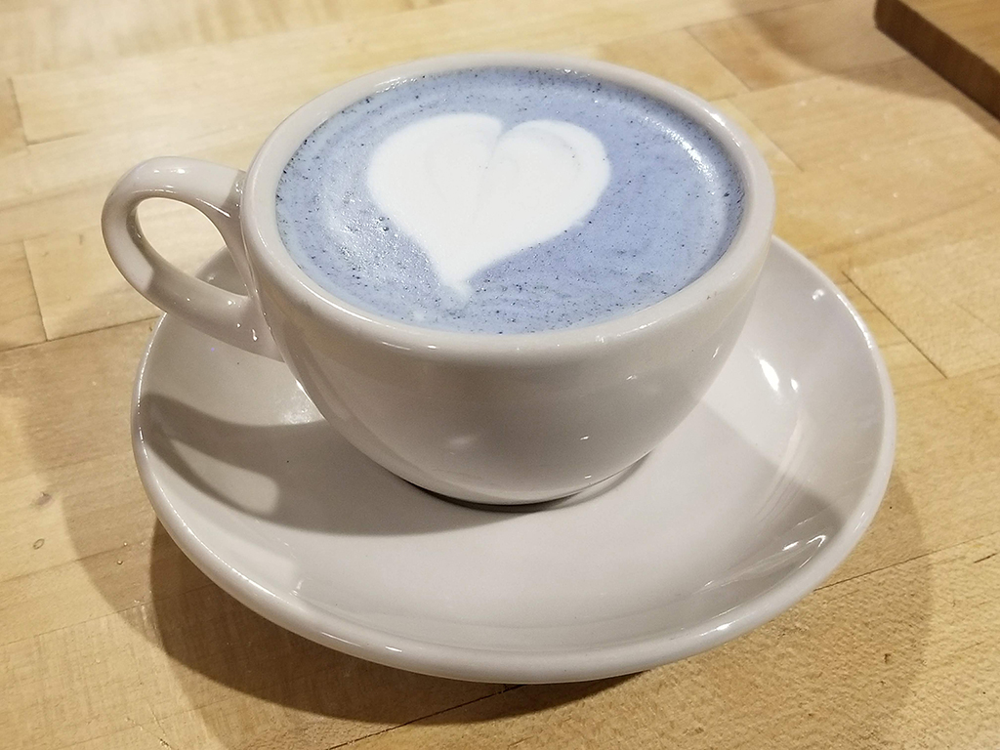
Before

After - alpha = 1.0, sigma = 10
1.2: Hybrid Images
Applied on a 3-color channel setup, we can observe that using colors is more impactful on the lower frequencies than the higher frequencies.
Man and Cat

Before

Before

After, sigma = 20, 21
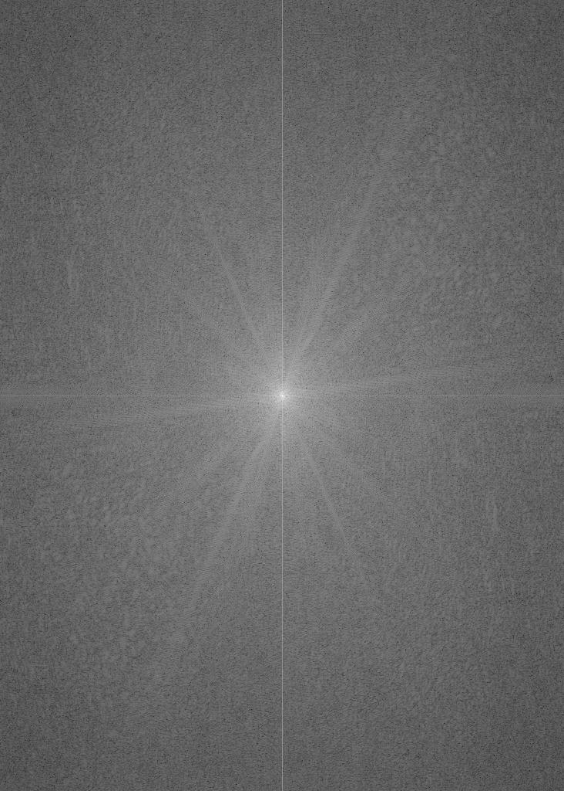
DerekPicture.jpg, FFT
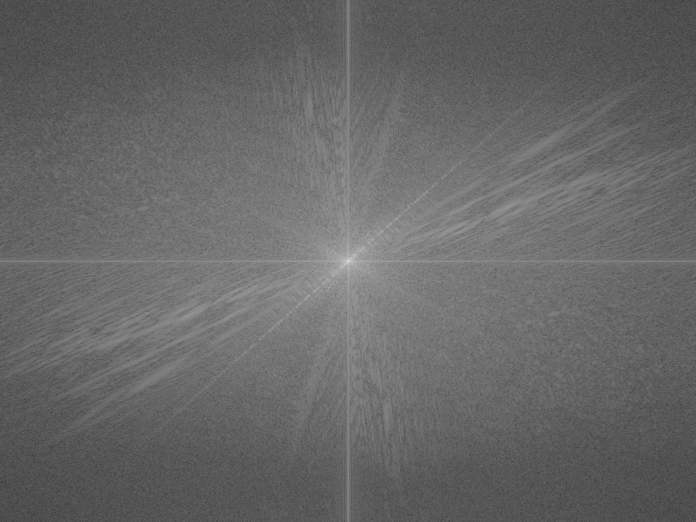
nutmeg.jpg, FFT

After - alpha = 1.0, sigma = 10
Woman and Red Panda

Before

Before

After, sigma = 20, 21
Man and Cow

Before

Before

After, sigma = 10, 25
Failure case due to alignment based on eyes not accounting for the too radical of a difference in face shape between the man and the cow.
1.3
Gaussian Stack, Monalisa, sigma = 5

Before

Before
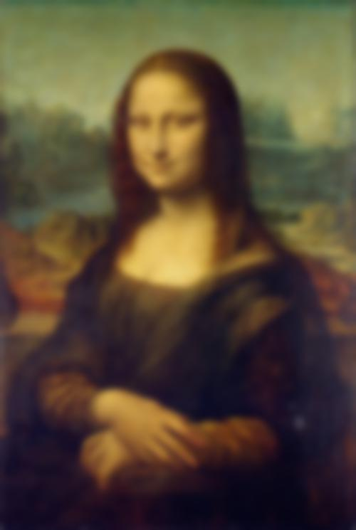
Before

Before

Before
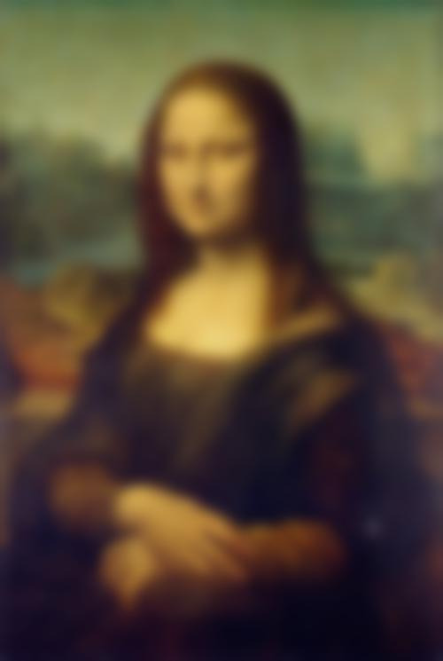
Before
Laplacian Stack, Monalisa, sigma = 5

Before

Before

Before

Before

Before
Before
Laplacian Stack, Woman and Panda from pt. 1.3, sigma = 5

Before
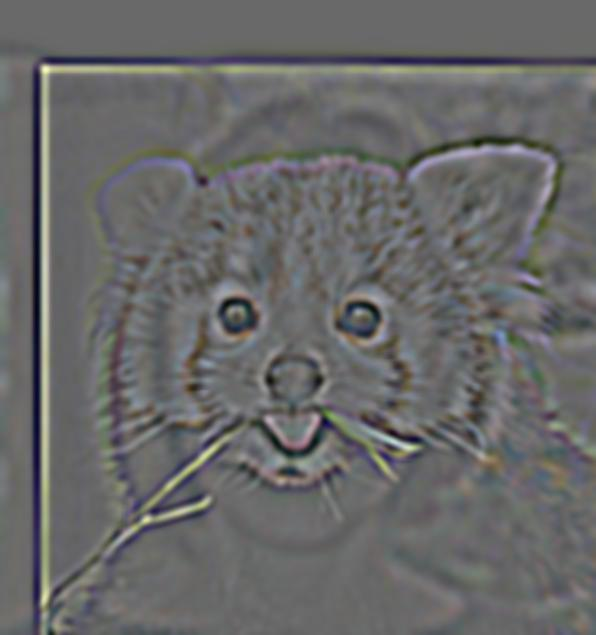
Before

Before
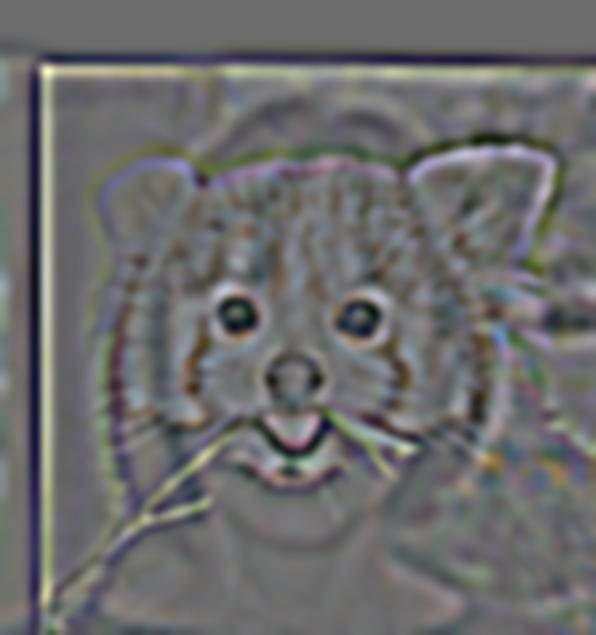
Before

Before
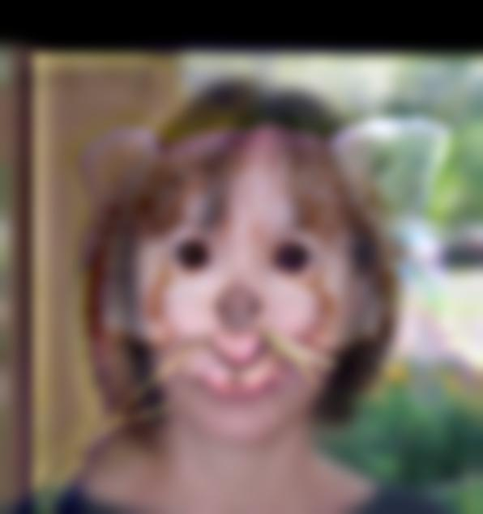
Before
1.4
Boundaries in mask is lined with a 50% gray to replicate the masking conditions regarding boundaries listed out in the paper. (This method has been GSI-approved.)
Apples and Oranges

Apple

Orange
Orange
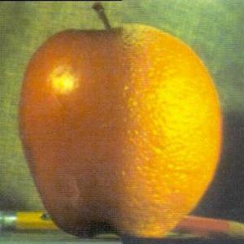
Orapple / Arange
Soccer and Basketball

Soccer

Basketball
Mask

Soccerbasket
Soccer and Volleyball
Soccer

Volleyball

Mask

Soccervolley
Soccer and Volleyball and Air Bud
Soccer
Volleyball

Mask
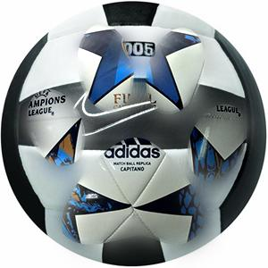
Soccervolley
Laplacian Stack, Soccer and Volleyball
Soccer, masked

Level 0

Level 1
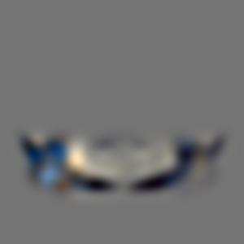
Level 2

Level 3
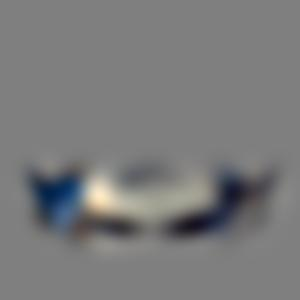
Level 4

Level 5
Volley, masked

Level 0

Level 1
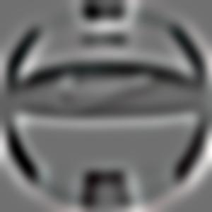
Level 2
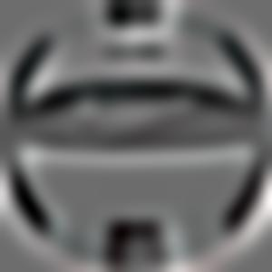
Level 3

Level 4

Level 5
2: Frequency Domain
2.1 Toy Problem
Toy Problem

Original

"mask" -- we're basically using the whole image, so we use a mask that covers every part of the image.

Result -- used .png because .jpeg produced artifacts.
Toy Problem, colored

Original
"mask" -- still using the whole image, so we use a mask that covers every part of the image.
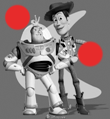
Result -- used .png because .jpeg produced artifacts.
2.2 Poisson Blending
The central idea in Poisson Blending is to minimize the difference: 1) between the source image's gradients inside the region, and 2) between the target image's gradients right outside the region and the source gradient's right at the border of the region.
Polar bear desert

Target img.

Source

Source img mask.
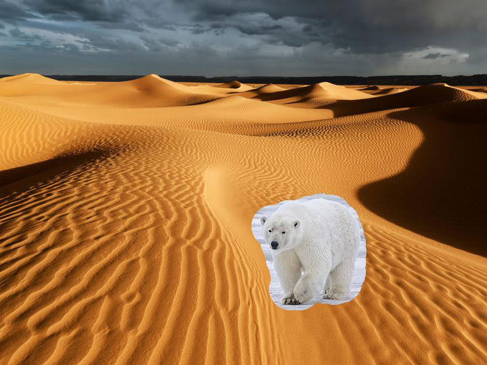
Overlay

Result

Failure case -- the mask is placed more closer to a dark color that's vastly different from the other surrounding colors of lighter brown. This caused the dark brown to propagate through the rest of the polar bear in an unnatural manner.
Heresy

Target img.
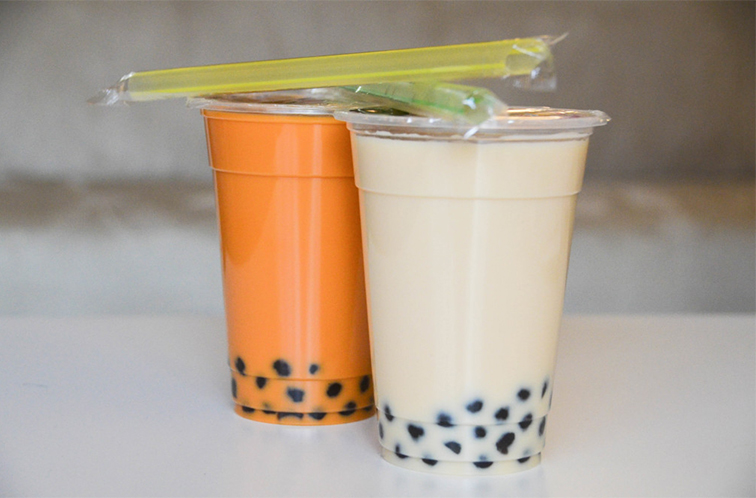
Source
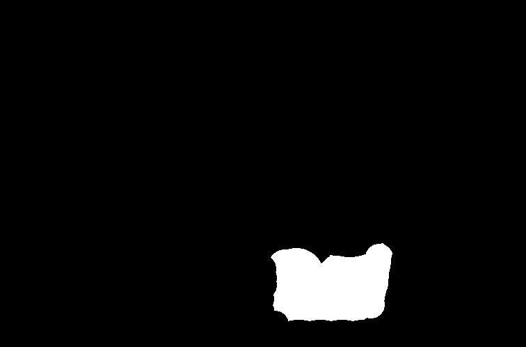
Source img mask.

Overlay

Result

Failure case -- the mask is placed more closer to a dark color that's vastly different from the other surrounding colors of lighter brown. This caused the dark brown to propagate through the rest of the polar bear in an unnatural manner.
Laplacian Blending vs. Poisson blending
Soccer and Volleyball #1
Soccer / Source
Volleyball / Target
Mask

Laplacian Blending

Poisson blending
Here, Laplacian did better. The Poisson blending's found "solution" is one that pushes the pixels too "hard", making the superimposed source image region seem unnatural compared to the rest of the target image.
Soccer and Volleyball #2
Soccer / Source
Volleyball / Target
Mask

Laplacian Blending

Poisson blending
In this case, Poisson blending created a more realistic result.
Soccer and Volleyball #3
Soccer / Source
Volleyball / Target

Mask

Laplacian Blending

Poisson blending
In this case, neither did too well, though the Poisson blending created a slightly more realistic result than laplacian blending. Here, Poisson blending forces the color of the source image to follow closer to the target image: notice how the soccer's white colors in the area near the volleyball's highlight is forced to match that highlight color.
From these cases, we can say that if you want to keep the original colors of the source image, you would use Laplacian blending, where if you don't mind changing the source image's colors to be closer to target's, you'd use Poisson blending, though be careful of situations where Poisson blending changes the source's color so much that it does not fit.